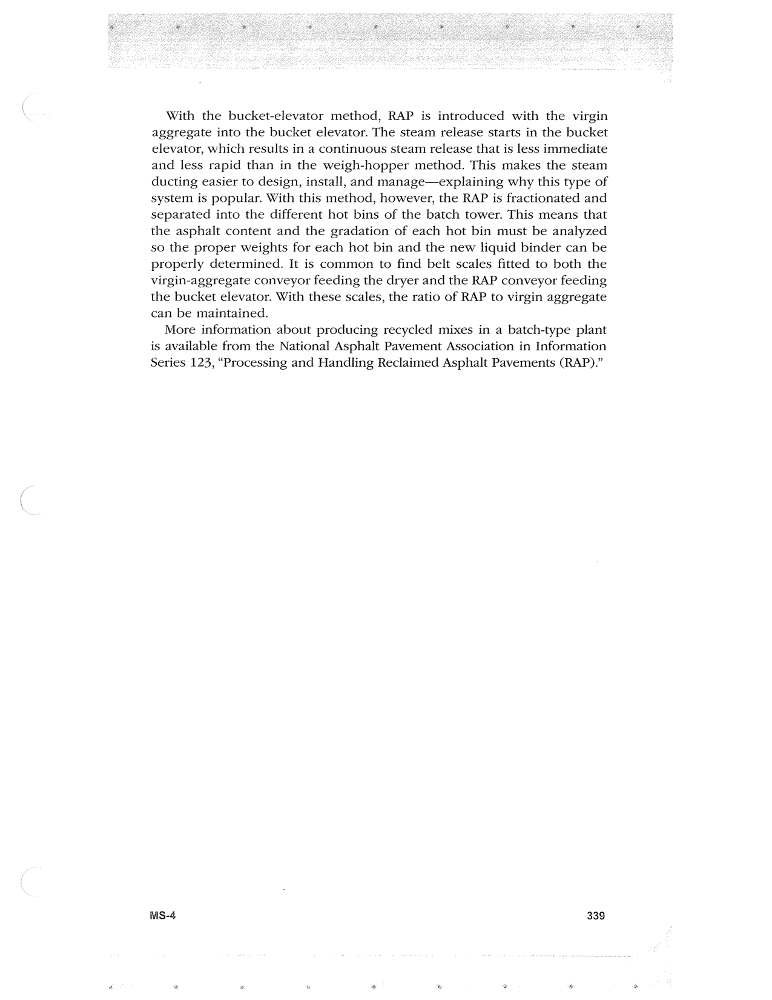

PDF page 373 · book page sequence 339


Searchable transcription
Unproofread OCR · 180 detected words; mean OCR confidence 95.84. Check technical values, symbols and table columns against the scan.
With the bucket-elevator method, RAP is introduced with the virgin aggregate into the bucket elevator. The steam release starts in the bucket elevator, which results in a continuous steam release that is less immediate and less rapid than in the weigh-hopper method. This makes the steam ducting easier to design, install, and manage—explaining why this type of system is popular. With this method, however, the RAP is fractionated and separated into the different hot bins of the batch tower. This means that the asphalt content and the gradation of each hot bin must be analyzed so the proper weights for each hot bin and the new liquid binder can be properly determined. It is common to find belt scales fitted to both the virgin-aggregate conveyor feeding the dryer and the RAP conveyor feeding the bucket elevator. With these scales, the ratio of RAP to virgin aggregate can be maintained.
More information about producing recycled mixes in a batch-type plant is available from the National Asphalt Pavement Association in Information Series 123, “Processing and Handling Reclaimed Asphalt Pavements (RAP).”
MS-4 339